library(AER) #データセット
library(tibble) #data.frame拡張版
library(dplyr) #data.frameの操作
library(rsample) #データ分割
library(recipes) #前処理
library(xgboost) #今回使用するモデルのパッケージ
library(ranger)
library(glmnet)
library(ROCR) #精度評価
library(fastshap) #SHAPを計算できるパッケージ群
library(treeshap)
library(kernelshap)
library(DALEX)
library(foreach) #並列計算による高速化
library(doParallel)
library(ggplot2) #グラフの描画
library(patchwork) #複数のgpplotを組み合わせる
library(shapviz) #SHAPの可視化14 fastshap
14.1 パッケージの概要
fastshapは、予測モデルの解釈手法の一種であるSHAPを、モンテカルロシミュレーションにより計算するパッケージです。 他のパッケージと比較すると、非常に軽量かつ動作原理がシンプルであるのが特徴です。
14.1.1 SHAPとは
SHAPという手法については データサイエンス関連基礎調査WG 大江麗地 (2024) に解説があるため、こちらを参照することをお勧めします。 以下では詳細な説明は避け、概要のみを記載します。
SHAP(SHapley Additive exPlanation)とは予測モデルの解釈に用いられる手法の一種で、 ある予測モデルの入力（説明変数）と出力（予測値）の組に対して、 どの説明変数の寄与によってその予測値となったのかを加法的に分解するものです。
個別の予測値 = その予測の説明変数1の寄与 + \cdots + その予測の説明変数Nの寄与 + 予測値平均
このようにして分解された各サンプル・説明変数の寄与をSHAP値と呼びます。
個別サンプルの予測に対する解釈を与える、いわゆるローカルな手法だと考えられますが、 多くのサンプルのSHAPを計算してそれをグラフにする、平均値で要約する等により、 モデル全体の解釈を与える、いわゆるグローバルな手法としても使用することが出来ます。
14.1.2 fastshapの特徴
説明変数ごとの寄与は、「その説明変数が入力されていない場合とされた場合の予測値の差」の（加重）平均で計算されます。 しかし、実際には「ある説明変数だけ予測モデルに入力しない」ということは通常出来ないため、 条件付期待値や、その説明変数を実データからランダムに選び出したときの予測値の平均のようなものを当てはめることとなります。 そのうえで、例えばN個の説明変数がある場合は、入力されているかどうかの組み合わせは2^N通りあることになるので、 たった1サンプルに対して、予測値の平均値のようなものを2^N通り分計算する必要があります。
1サンプルならまだしも、グローバルな手法として使用するために多数のサンプルで計算する場合は計算量が莫大なものとなります。 そこで高速に計算する手法がいくつか提案されており、 そのうち fastshap は Štrumbelj, Erik and Kononenko, Igor (2014) によって提案されるモンテカルロシミュレーションによる近似を実装したものです。
原理は非常にシンプルで、例えばあるサンプルのk番目の説明変数の寄与を計算する場合、
- 「入力」する説明変数の数をランダムに決める（個数に関して一様な分布）
- その数だけ、「入力」する説明変数をk番目以外からランダムに選び出す
- k番目以外の説明変数について、「入力」する説明変数はそのサンプルそのまま、「入力」しない説明変数は全サンプルからランダムに選ぶ
- k番目の説明変数について「入力」した場合と「入力」しない（全サンプルからランダムに選んだ）場合の2回の予測を計算し、その差分を取る
- この操作を複数回行い、差分の平均値をk番目の説明変数の寄与とする
という流れになります。
全サンプルのSHAPを計算したとしても予測を行う回数が 説明変数の数×2×試行回数×用意したサンプルの数 となり、 現実的な計算時間でグローバルな手法としてのSHAPを用いることが可能です。 ただし、特徴量の数・サンプル数によっては計算値を収束させるほど試行回数を増やすのは現実的ではないこともあるため、 あくまで近似値を計算するものと捉えるべきでしょう。
なお、乱数の適用にC++を使用する、並列処理に対応させるという工夫により高速化を図っているのも本パッケージの特徴です。
14.2 準備
14.2.1 パッケージの読み込み
14.2.2 データセットの読み込み
Christian Kleiber and Achim Zeileis (2008) で使用されたデータセット等をまとめたパッケージAERに含まれる、 HealthInsuranceというデータセットを使用します。
性別・年齢・学歴・家族構成・雇用状態（自営業か否か）健康保険の加入状況等に関する 約9,000個のサンプルが含まれています。 今回は、健康保険に加入しているかどうかを予測するモデルを作成することとします。
データセットの詳細については Achim Zeileis (2024) を参照してください1。
data("HealthInsurance")
df_all <- HealthInsurance
summary(df_all) health age limit gender insurance married
no : 629 Min. :18.00 no :7571 female:4169 no :1750 no :3369
yes:8173 1st Qu.:30.00 yes:1231 male :4633 yes:7052 yes:5433
Median :39.00
Mean :38.94
3rd Qu.:48.00
Max. :62.00
selfemp family region ethnicity education
no :7731 Min. : 1.000 northeast:1682 other: 365 none :1119
yes:1071 1st Qu.: 2.000 midwest :2023 afam :1083 ged : 374
Median : 3.000 south :3075 cauc :7354 highschool:4434
Mean : 3.094 west :2022 bachelor :1549
3rd Qu.: 4.000 master : 524
Max. :14.000 phd : 135
other : 667 14.2.3 前処理
今回例として使用するモデルでは、説明変数が数値型である必要があるので、factor型変数を数値型に変換しておきます2。
rec_init <- df_all %>% recipe(insurance ~ .) %>% #前処理手順の定義
#ethinicityは最も多いカテゴリがcaucなので、これを基準カテゴリに変更
step_relevel(ethnicity, ref_level = "cauc") %>%
#educationは学歴を表す説明変数で、大きいほど高学歴であるため、そのままダミー変数にするのではなく、数値に変換
step_mutate(education_main = as.numeric(education) - 1) %>%
#ただし、最後のカテゴリだけは「その他」を表しているので、これだけは別のダミー変数に分離する
step_mutate(education_other = if_else(education_main == 6, 1, 0)) %>%
step_mutate(education_main = if_else(education_main < 6, education_main, 0)) %>%
step_rm(education) %>%
step_dummy(all_factor_predictors()) %>% #他のfactor型変数は単純にダミー変数化
step_relevel(insurance, ref_level = "yes")
#目的変数は健康保険に加入しているかを表すinsurance
df_baked <- rec_init %>% prep() %>% bake(new_data = NULL) #上記で定義した前処理手順を実際に実行上記前処理を施したうえで、学習データとテストデータに分割します。
set.seed(2024)
split_df <- rsample::initial_split(df_baked, prop = 0.8) #80%を学習データ、20%をテストデータとする
df_train <- rsample::training(split_df)
df_test <- rsample::testing(split_df)
df_train_x <- df_train %>% dplyr::select(-insurance)
df_train_y <- df_train$insurance
df_test_x <- df_test %>% dplyr::select(-insurance)
df_test_y <- df_test$insurance14.2.4 モデル構築
続いてXGBoostによる予測モデルを学習データをもとに構築します。3
2値分類の問題ですが、予測モデルの出力としては加入しているか否かの2通りではなく、 加入している確率を出力するようにしています。
set.seed(2024)
model_xgboost <- xgboost(data = as.matrix(df_train_x), label = as.matrix(2 - as.numeric(df_train_y)), nrounds = 100,
params = list(eta = 0.3, max_depth = 2, gamma = 0, min_child_weight = 1,
subsample = 1, colsample_bytree = 1, colsample_bynode = 2/14, objective = "binary:logistic"),
verbose = 0)構築した予測モデルの精度をテストデータを用いて確認しておきます。
まずはAUC(ROC)を確認します。これは2値分類モデルで使用される評価指標で、高いほど精度が良いという評価になります。
calc_logloss <- function(act, pred){mean(-act *log(pred)-(1-act)*log(1-pred))}
calc_score <- function(object, predfun, df_test_x, df_test_y){
yhat <- object %>% predfun(df_test_x)
pr <- ROCR::prediction(yhat, df_test_y)
auc <- pr %>% ROCR::performance("auc")
auc_plot <- pr %>% ROCR::performance("tpr", "fpr")
list(
auc_plot = auc_plot,
auc = auc@y.values %>% as.numeric(),
logloss = calc_logloss(act = 2 - as.numeric(df_test_y), pred = yhat)
)
}
predfun_xgboost <- function(object, newdata){
dt <- as.matrix(newdata)
object %>% predict(newdata = dt)
}
score <- calc_score(model_xgboost, predfun_xgboost, df_test_x, df_test_y)
score$auc_plot %>% plot()
score$auc[1] 0.75039330.75は高くもなく低くもないといった程度ではあるものの、用途によってはこれでも十分でしょう。 （例えば True Positive Rate = 0.6, False Positive Rate = 0.2 あたりとなるしきい値をとれば、 全体の8割程度を占める加入者のうち6割を削減しつつ、少数派の非加入者のうち8割を残した集団が作れる） 後で他のモデルと比較する際の参考のため、LogLossスコアも計算しておきます。 こちらは出力される確率値の正確性を評価するもので、低いほうが精度が良いという評価になります。
#後で別のモデルと比較するため、スコアをデータフレームに格納
df_scores <- tibble(model = "xgboost", auc = score$auc, logloss = score$logloss)
score$logloss[1] 0.442405914.3 fastshapの使用方法
14.3.1 基本的な使用方法
まず、実際にSHAPを計算したいサンプルと、SHAP計算時に「入力しない説明変数」のためにランダムで選ぶ元になるサンプルを選びます。 この両者は同じでもよいですが、前者は数百件程度が一応の目安です。 後者は計算パフォーマンス次第ですが、前者を多めに取りたい場合は前者よりも少なめにします。
set.seed(2024) #SHAPを計算したいサンプル
nrow_shap <- 100
df_shap <- df_train[sample(nrow(df_train), nrow_shap), ]
df_shap_x <- df_shap %>% dplyr::select(-insurance)
set.seed(2024+1) #ランダムで選ぶ元になるサンプル
nrow_shapbg <- 30
df_shapbg <- df_train[sample(nrow(df_train), nrow_shapbg), ]
df_shapbg_x <- df_shapbg %>% dplyr::select(-insurance)次に、explain関数で実際にSHAPを計算します。
ここで、0から1の確率値を加法的に分解するよりも、 ロジット変換により実数全体の数値に変換してから分解したほうが説明変数ごとの寄与を比較する際には有用と考えられます。
predict関数で出力される確率値をロジット変換したものを出力する関数を作成し、 引数pred_wrapperにこの関数を指定することでこれを実現することが出来ます。
logit <- function(x) log(x) - log(1-x)
predfun_xgboost_logit <- function(object, newdata){ #predict関数の結果をロジット変換する関数
predfun_xgboost(object, newdata) %>% logit()
}
t1 <- proc.time()
set.seed(2024)
shap_fs <- fastshap::explain(model_xgboost, #予測モデルのオブジェクト
X = df_shapbg_x, #ランダムで選ぶもとになるサンプル
# SHAPを計算したいサンプル こちらは厳密にdata.frame型でないとエラー(バグ?)
newdata = as.data.frame(df_shap_x),
pred_wrapper = predfun_xgboost_logit, #予測値を生成する関数
nsim = 10, #試行回数
parallel = FALSE) #並列処理の設定
t2 <- proc.time()
t0 <- (t2-t1)[3]
names(t0) <- NULL
cat("処理時間:", t0, "秒")処理時間: 2.07 秒最後にこれを可視化します。これにはshapvizパッケージを用いるとよいでしょう。 まず、個別のサンプルに対する寄与の分解を表示するには次のようにします。
sv <- shapviz::shapviz(shap_fs, X = df_shap_x) #shapvizパッケージで可視化できるオブジェクトに変換
shapviz::sv_waterfall(sv, row_id = 1) #1つ目のサンプルの予測結果に対してプロットこのサンプルでは、自営業であること（selfemp_yes=1）や独身である（married_yes=0）ことによって、 平均的な被験者よりも健康保険に加入しない傾向にあると判断されたようです。
また、グローバルな手法として全サンプルの結果を一覧に表示し、 説明変数ごとに全般的にどの程度寄与しているかをプロットするには次のようにします。
shapviz::sv_importance(sv, kind = "beeswarm")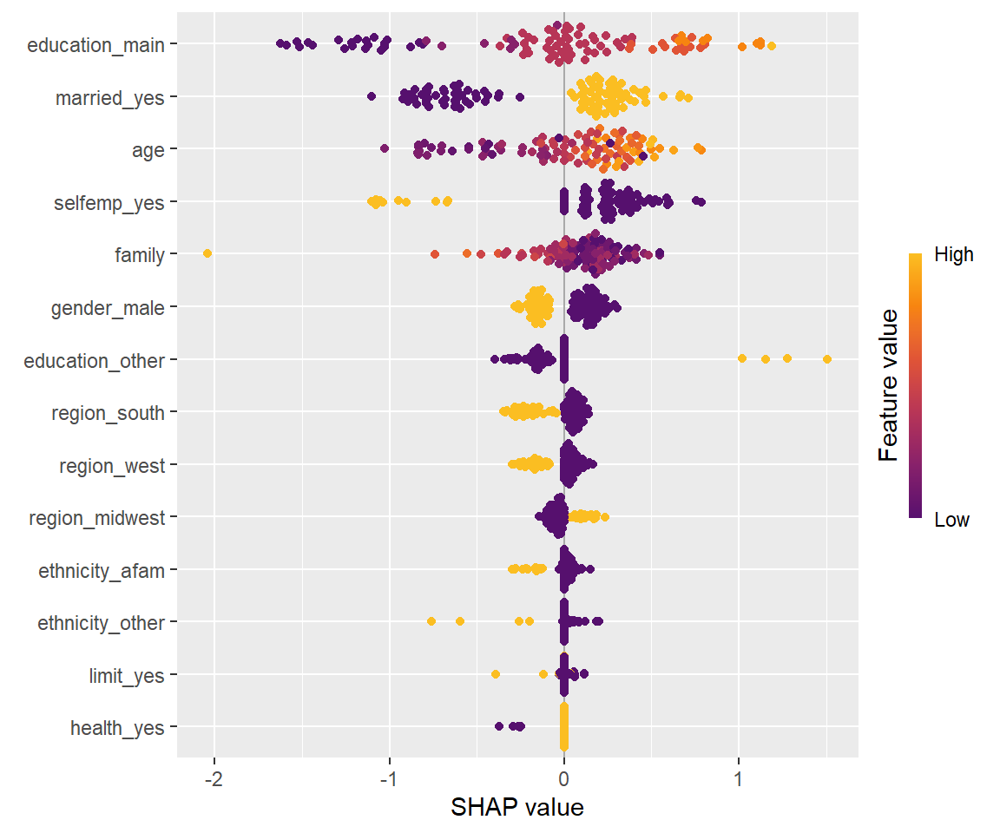
横軸は寄与の大きさを、色付けは説明変数の値を示しており、 例えば明るい色の点が右側にある場合は、その説明変数が高いほど予測確率が高くなることを示します。
shapviz::sv_importance関数はデフォルトでは寄与が大きい説明変数から順に並べられるので、 最も予測確率への寄与が大きい説明変数は学歴（education_main）であることがわかります。 また、学歴が高いほど健康保険に加入する傾向があることがわかります。
14.3.2 並列計算
fastshapにはforeachパッケージによる並列計算が実装されています。
事前にdoParallelパッケージの関数を使用して適切に並列計算の設定を行ったのちに、 引数parallelをTRUEにしたうえで、foreach関数に渡したい引数を追加することで並列計算が可能になります。
foreachパッケージによる並列計算の際は複数の独立したR環境が生成されますが、 その環境に引き渡すべきパッケージや関数は明示的に指定する必要があることに注意してください。
cluster <- makeCluster(detectCores()-1)
registerDoParallel(cluster)
t1 <- proc.time()
set.seed(2024)
shap_fs <- fastshap::explain(model_xgboost,
X = df_shapbg_x,
newdata = as.data.frame(df_shap_x),
pred_wrapper = predfun_xgboost_logit,
nsim = 100,
parallel = TRUE,
#独立したR環境に引き渡すべきパッケージや関数を記述
.packages=c('dplyr'), .export=c("logit", "predfun_xgboost"))
t2 <- proc.time()
t <- (t2-t1)[3]
names(t) <- NULL
cat("処理時間:", t, "秒")
stopCluster(cluster)処理時間: 10.97 秒並列計算しない場合は10回の試行に2.07秒かかっていました。 上記では試行回数を100回に増やしましたが、並列計算の恩恵によってその10倍よりは短い時間で計算できています。
なお、どのような状況であっても並列計算で劇的に高速化する訳ではなく、また環境によって効果は異なってくる点に注意してください。
ちなみに、shapviz::sv_importance関数の結果は次のとおりであり、 試行回数を増やすことによって計算結果が収束してきていることがわかります。 逆に、試行回数10回では流石に少なすぎるかもしれません。
sv <- shapviz::shapviz(shap_fs, X = df_shap_x)
shapviz::sv_importance(sv, kind = "beeswarm")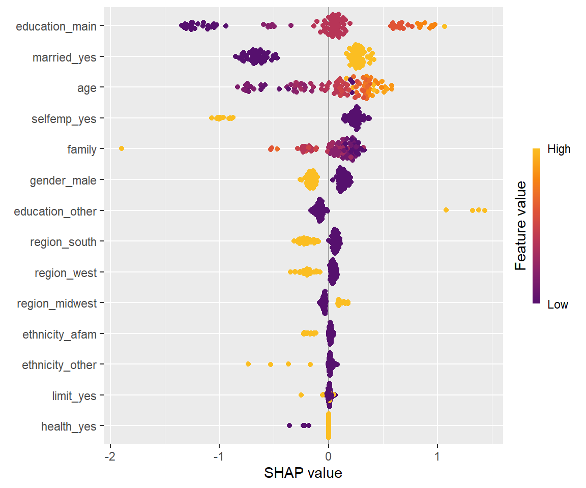
14.3.3 引数adjustによる局所正確性の確保
説明変数ごとの寄与を積み上げると元の予測値になるというSHAPの性質を局所正確性（local accuracy）といいます。 しかし、fastshapは近似的な手法のため、そのままでは局所正確性が満たされないという弱点があります。 引数adjustをTRUEにすることで、局所正確性を確保できるように補正することができます。
set.seed(2024)
shap_fs_notadjusted <- fastshap::explain(model_xgboost,
X = df_shapbg_x,
newdata = as.data.frame(df_shap_x),
pred_wrapper = predfun_xgboost_logit,
nsim = 4,
parallel = FALSE,
adjust = FALSE)
sv_notadjusted <- shapviz::shapviz(shap_fs_notadjusted, X = df_shap_x)
set.seed(2024)
shap_fs_adjusted <- fastshap::explain(model_xgboost,
X = df_shapbg_x,
newdata = as.data.frame(df_shap_x),
pred_wrapper = predfun_xgboost_logit,
nsim = 4,
parallel = FALSE,
adjust = TRUE)
sv_adjusted <- shapviz::shapviz(shap_fs_adjusted, X = df_shap_x)
(shapviz::sv_waterfall(sv_notadjusted, row_id = 1) + ggtitle("補正前")) +
(shapviz::sv_waterfall(sv_adjusted, row_id = 1) + ggtitle("補正後"))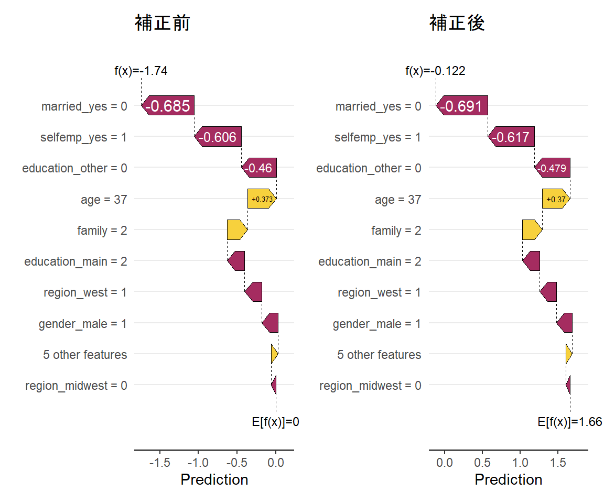
cat("実際の予測値（のロジット変換後）:", predfun_xgboost_logit(model_xgboost, df_shap_x[1, ]))実際の予測値（のロジット変換後）: -0.1223738補正後は、プロットの上部にあるf(x)の値が実際の予測値と一致していることが確認できます。
14.3.4 引数exactによる理論値の計算
引数exactをTRUEにした場合、次のモデルに限り、 モンテカルロシミュレーションを行うのではなくパラメータから理論的な値を計算することができます。
stats::lm()：線形回帰モデル…最初から加法的に関数が分解されているため、係数×説明変数を計算すればよいxgboost::xgboost(),lightgbm::lightgbm()：ブースティング木モデル…Tree SHAPを用いる
XGBoostの場合を示すと次のとおり。
t1 <- proc.time()
set.seed(2024)
shap_exact <- fastshap::explain(model_xgboost,
X = as.matrix(df_shap_x),
exact = TRUE,
parallel = FALSE)
t2 <- proc.time()
t0 <- (t2-t1)[3]
names(t0) <- NULL
cat("処理時間:", t0, "秒")処理時間: 0.12 秒shapviz::sv_importance関数で可視化してみると次のとおりです。4
sv_exact <- shapviz::shapviz(shap_exact, X = df_shap_x)
shapviz::sv_importance(sv_exact, kind = "beeswarm")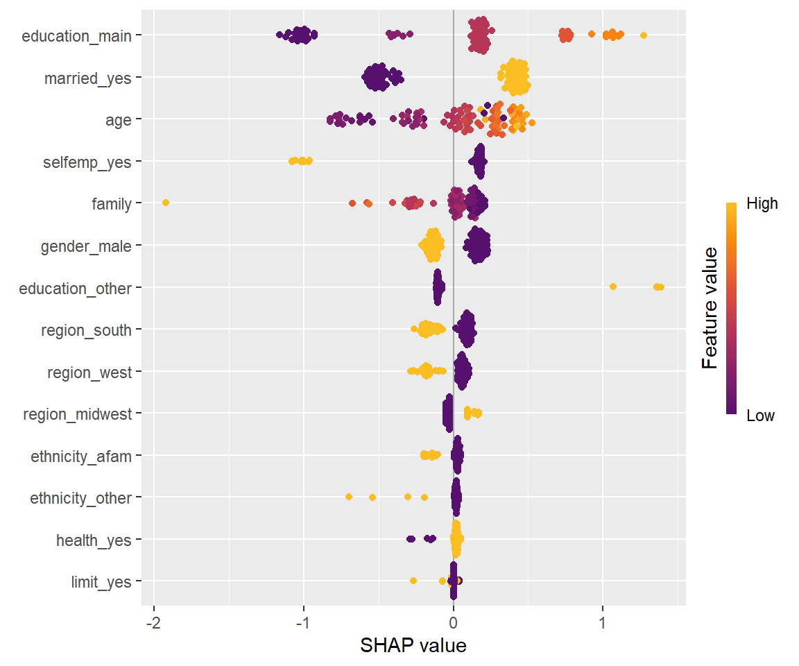
14.4 他のパッケージとの比較
SHAPの計算を実装したパッケージは他にもいくつかあり、代表的なものを比較して整理すると次のようになります。
| パッケージ名 | 概要 | 対応モデル | 計算速度 | 計算精度 |
|---|---|---|---|---|
| fastshap | モンテカルロシミュレーションによる計算 | すべての予測モデル | 高速 | 低い |
| kernelshap | Kernel SHAPの高速な実装 | すべての予測モデル | 普通 | 高い |
| treeshap | Tree SHAP | ランダムフォレスト、ブースティング木 | 非常に高速 | 高い |
| DALEX | 他の手法(breakdown等)も統合的に扱える | すべての予測モデル | 非常に低速 | 高い |
最も高速なのはTree SHAPを実装したtreeshapです。
Tree SHAPは、決定木の場合は条件付期待値の理論値が予測モデルのパラメータから計算可能であり、 さらにアンサンブルモデルの場合には平均値でSHAPを計算できるという特徴によって高速に計算する手法です。 そのため、対応しているのはランダムフォレストやブースティング木を実装した一部のパッケージに限られます。
それ以外のモデルの場合、kernelshapは計算精度の高さと計算速度をある程度両立してはいるものの、 サンプル数や説明変数の数が多い場合には実行が難しい場合もあります。
これらに比べてfastshapは非常に軽量かつシンプルなため、 利用者側で精度と計算速度の調整が行いやすいという点が特徴と言えます。
DALEXはSHAP以外の他の解釈手法をも統合的に扱える点が特徴ですが、 計算速度は低速であり、グローバルな手法としては扱いづらいかもしれません。 グローバルな手法として用いる場合はshapvizパッケージが使用できない（2024.8時点）という弱点もあります。
14.4.1 kernelshapの例
今回の例の場合はfastshapで並列計算を採用するよりも、高速で良い結果が得られているように思われます。
t1 <- proc.time()
set.seed(2024)
shap_ks <- kernelshap::kernelshap(model_xgboost, X = df_shap_x, bg_X = df_shapbg_x,
pred_fun = predfun_xgboost_logit)Kernel SHAP values by the hybrid strategy of degree 2t2 <- proc.time()
t0 <- (t2-t1)[3]
names(t0) <- NULL
cat("処理時間:", t0, "秒")処理時間: 3.16 秒sv <- shapviz::shapviz(shap_ks) #kernelshapの場合引数Xは不要
shapviz::sv_importance(sv, kind = "beeswarm")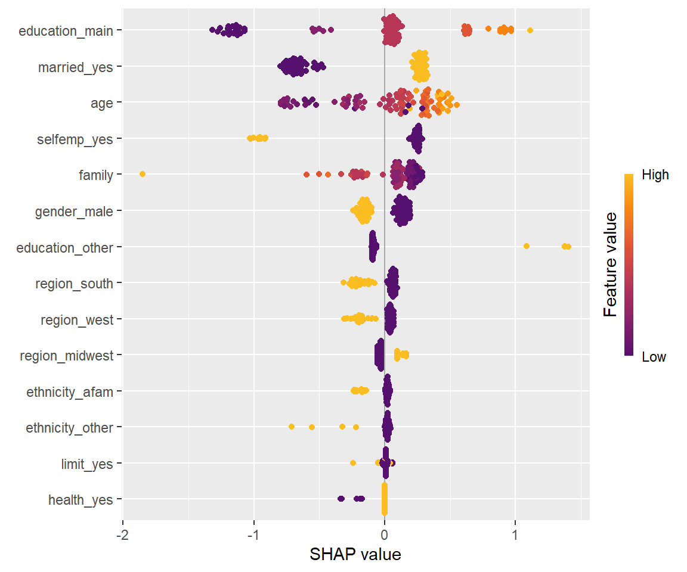
14.4.2 DALEXの例
DALEXの場合はshapvizで可視化できるのは個別サンプルの寄与を計算するDALEX::predict_parts関数のみで、 グローバルな手法で用いるDALEX::shap_aggregated関数は対応していません。
explainer <- DALEX::explain(model_xgboost,
data = df_shapbg_x,
predict_function = predfun_xgboost_logit,
quietly = TRUE,
verbose = FALSE)
t1 <- proc.time()
set.seed(2024)
shap_dalex <- DALEX::predict_parts(explainer, df_shap_x[1, ], type = 'shap')
t2 <- proc.time()
t0 <- (t2-t1)[3]
names(t0) <- NULL
cat("処理時間:", t0, "秒")処理時間: 1.97 秒sv_dalex <- shapviz::shapviz(shap_dalex)
shapviz::sv_waterfall(sv_dalex, row_id = 1)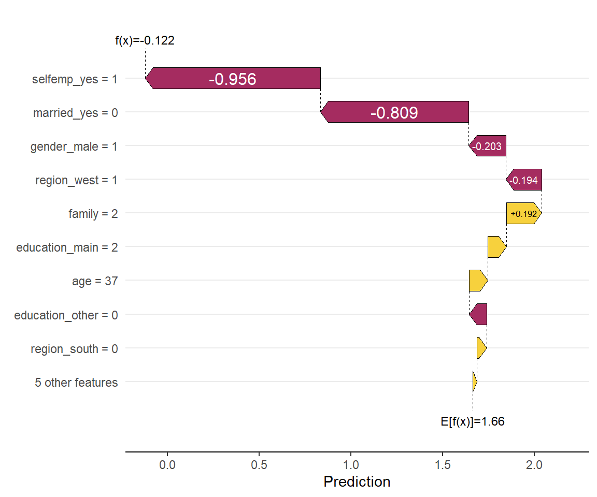
さらに、DALEX::shap_aggregated関数は計算時間が非常に長く、実用的とはいえません。
df_shap_x_dalex <- df_shap_x
#DALEX::shap_aggregatedには説明変数の型がすべて同じではエラーになるバグがある（2024.8時点）ため、
#一つだけ別の型（numericからinteger）に変換しておく
df_shap_x_dalex$education_main <- as.integer(df_shap_x$education_main)
df_shap_x_dalex <- df_shap_x_dalex[1:4, ] #あまりにも計算時間が長いので、4サンプルに限定
explainer <- DALEX::explain(model_xgboost,
data = df_shapbg_x,
predict_function = predfun_xgboost_logit,
quietly = TRUE,
verbose = FALSE)
t1 <- proc.time()
set.seed(2024)
shap_dalex_agg <- DALEX::shap_aggregated(explainer, df_shap_x_dalex, type = 'shap', B = 10) #Bは試行回数
t2 <- proc.time()
t0 <- (t2-t1)[3]
names(t0) <- NULL
cat("処理時間:", t0, "秒")処理時間: 2.9 秒shap_dalex_agg %>% plot()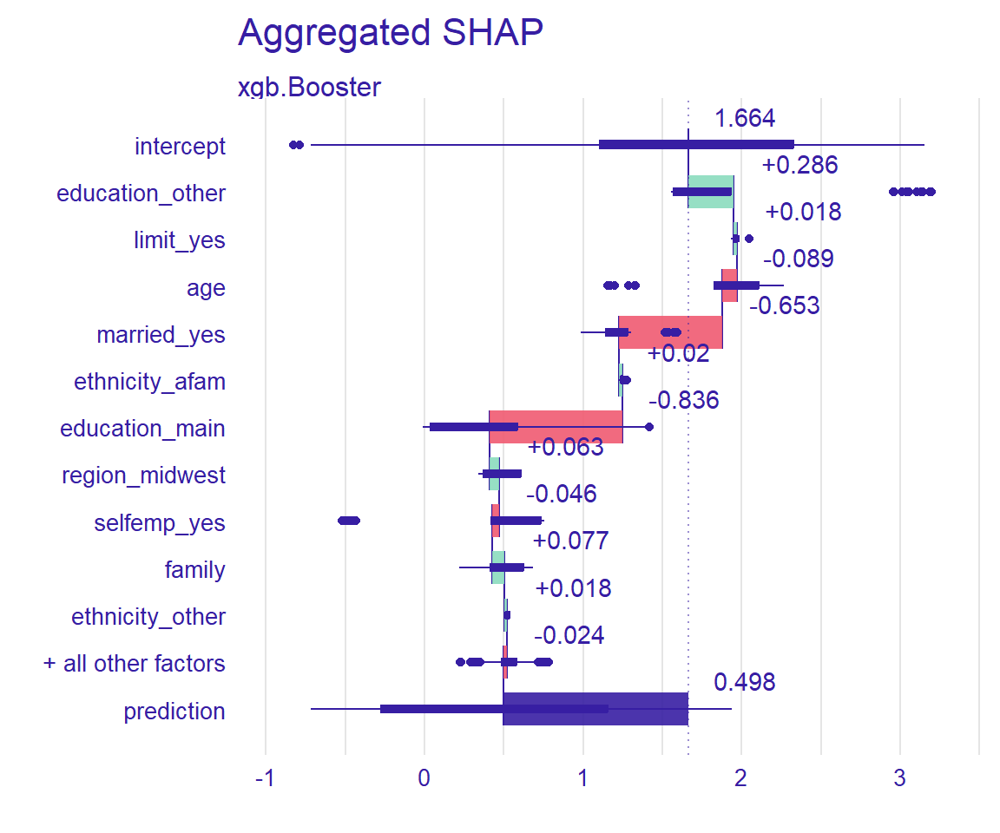
14.4.3 他のモデルの例
14.4.3.1 GLM
最も単純な予測モデルの例として、ロジスティック回帰の例を用意します。
実は単純なロジスティック回帰でもそれなりの予測精度になります。 最も重要な説明変数である学歴については単純に学歴の低いものから0, 1, 2, …と並べて数値に変換しただけですが、 これでも非常によくフィットします。 前述までのSHAPによるグローバルな分析にて、education_mainの点がおおむね等間隔に群団を作っていたことと整合します。
model_glm <- glm(insurance ~ ., data = df_train, family = "binomial")
predfun_glm <- function(object, newdata){
res <- object %>% predict(newdata = newdata, type = "response")
1 - res
}
predfun_glm_logit <- function(object, newdata){
res <- object %>% predict(newdata = newdata, type = "link")
-res
}
score <- calc_score(model_glm, predfun_glm, df_test_x, df_test_y)
df_scores <- df_scores %>% bind_rows(tibble(model = "glm", auc = score$auc, logloss = score$logloss))
score$auc_plot %>% plot()cat("auc:", score$auc, "logloss:", score$logloss)auc: 0.7400438 logloss: 0.450443814.4.3.2 特徴量エンジニアリングを加えた（正則化）GLM
特徴量エンジニアリング（説明変数の加工）を行うことで、非線形な作用をGLMで捉えられるようになります。 この場合はモデル自身の係数が複雑になってしまい解釈可能性が低下してしまうので、 SHAPのような手法を駆使して解釈することは考えられます。
Tree SHAPを用いることができない例として、この特徴量エンジニアリングを加えたGLMを用意します。
recp_glm_prep <- df_train %>% recipe(insurance ~ .) %>%
#高学歴層では等間隔とならないことへの対応
step_mutate(education_geq_4 = 1*(education_main >= 4)) %>%
#年齢が非常に複雑に作用することを捉える
step_mutate(age_geq_20 = 1*(age >= 20)) %>%
step_mutate(age_geq_24 = 1*(age >= 24)) %>%
step_mutate(age_geq_26 = 1*(age >= 26)) %>%
step_mutate(age_geq_27 = 1*(age >= 27)) %>%
step_mutate(age_geq_57 = 1*(age >= 57)) %>%
step_mutate(age_geq_58 = 1*(age >= 58)) %>%
#家族の数もわずかに非線形な作用がある
step_mutate(family_geq_2 = 1*(family >= 2)) %>%
step_mutate(family_geq_3 = 1*(family >= 3)) %>%
step_mutate(family_geq_7 = 1*(family >= 7)) %>%
step_mutate(family_geq_11 = 1*(family >= 11)) %>%
step_mutate(family_geq_12 = 1*(family >= 12)) %>%
#重要な説明変数に関連する交互作用項を追加
step_interact(terms = ~ (tidyselect::starts_with("age") + tidyselect::starts_with("education_") +
married_yes + selfemp_yes + education_other)*all_numeric_predictors(), sep = ":") %>%
prep()
df_train_x_glm_prep <- recp_glm_prep %>% bake(new_data = df_train_x)
lambda_glm_prep <- 0.0036 #正則化項の係数
#交互作用項が多数作られてしまうので、Lasso回帰による変数選択を組み合わせる
model_glm_prep <- glmnet::glmnet(x = df_train_x_glm_prep, y = 2 - as.numeric(df_train_y),
alpha = 1, lambda = lambda_glm_prep, family = "binomial")
#予測関数の中に上記前処理を行う処理を差し込むことで
#他のモデルと同じ形式のデータフレームを入力できるようにしておく
predfun_glm_prep <- function(object, newdata){
df <- recp_glm_prep %>% bake(new_data = newdata)
res <- object %>% predict(newx = as.matrix(df), type = "response")
res[,1]
}
predfun_glm_prep_logit <- function(object, newdata){
df <- recp_glm_prep %>% bake(new_data = newdata)
res <- object %>% predict(newx = as.matrix(df), type = "link")
res[,1] #ベクトルにしておかないとfastshapの計算に失敗する
}
score <- calc_score(model_glm_prep, predfun_glm_prep, df_test_x, df_test_y)
df_scores <- df_scores %>% bind_rows(tibble(model = "glm_prep", auc = score$auc, logloss = score$logloss))
score$auc_plot %>% plot()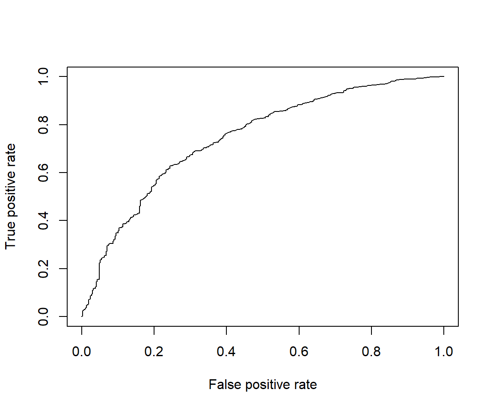
cat("auc:", score$auc, "logloss:", score$logloss)auc: 0.7446471 logloss: 0.447571714.4.3.3 rangerによるランダムフォレスト
Tree SHAPが使用できる他の例として、rangerパッケージのランダムフォレストを用意します。
set.seed(2024)
df_train_ranger <- df_train
df_train_ranger$insurance <- 2 - as.numeric(df_train_ranger$insurance)
model_ranger <- ranger::ranger(formula = insurance ~ ., data = df_train_ranger,
importance = 'none', #probability = TRUE,
num.trees = 100, min.node.size = 40, mtry = 4)
#分類問題の場合はprobability = TRUEとすべきだが、treeshap::unifyでエラーとなるため通常の回帰モデルとする
predfun_ranger <- function(object, newdata){
res <- object %>% predict(data = newdata)
res$predictions
}
predfun_ranger_logit <- function(object, newdata){ #predict関数の結果をロジット変換する関数
predfun_ranger(object, newdata) %>% logit()
}
score <- calc_score(model_ranger, predfun_ranger, df_test_x, df_test_y)
df_scores <- df_scores %>% bind_rows(tibble(model = "ranger", auc = score$auc, logloss = score$logloss))
score$auc_plot %>% plot()cat("auc:", score$auc, "logloss:", score$logloss)auc: 0.7360556 logloss: 0.453657614.4.3.4 予測モデルの精度比較
本稿の主題を外れるため、各予測モデルの解釈を比較したりはしませんが、 いずれもうまく学習できているということを確かめるために XGBoostと比較しても精度があまり変わらないということを確認しておきます。
df_scores14.4.4 計算時間比較
ここまでに用意した4つのモデル（XGBoost、rangerによるランダムフォレスト、GLM、特徴量エンジニアリング付GLM）に対して、 fastshap、kernelshap、treeshapによるSHAPの計算時間を比較してみます。
SHAPを計算するサンプル数を増やした時に計算時間がどのように変化するかをプロットすると次のとおり。 （treeshap以外で使用するnrow_shapbgは50、fastshapの試行回数は10）
サンプル数を増やしてもfastshapはあまり計算時間が増えませんが、 kernelshapは比例的に計算時間が増加します。 treeshapは非常に高速ですが、rangerではツリーの構造のためなのか、サンプル数を増やすとfastshapと逆転します。
特徴量エンジニアリング付きGLM（glm_prep）は予測関数を呼び出すたびに前処理を実行するため、 他のモデルと比べて計算時間が長くなっています。
ggplot(data = results %>% dplyr::filter(nrow_shapbg <= 50, nsim <= 10),
mapping = aes(x = nrow_shap, y = time, color = model, linetype = method)) +
geom_line()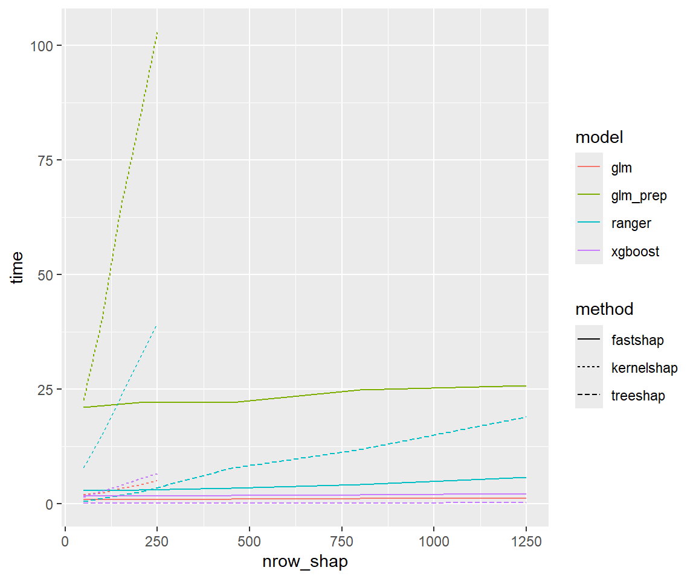
特徴量エンジニアリング付きGLMを除くと次のとおり。
ggplot(data = results %>% dplyr::filter(nrow_shapbg <= 50, nsim <= 10, model != "glm_prep"),
mapping = aes(x = nrow_shap, y = time, color = model, linetype = method)) +
geom_line()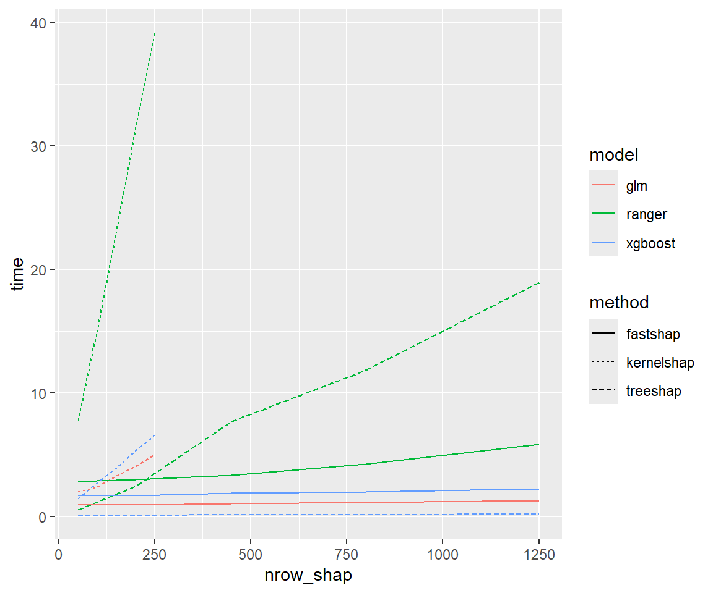
さらにXGBoostに着目すると次のとおり。
ggplot(data = results %>% dplyr::filter(nrow_shapbg <= 50, nsim <= 10, model == "xgboost"),
mapping = aes(x = nrow_shap, y = time, color = model, linetype = method)) +
geom_line()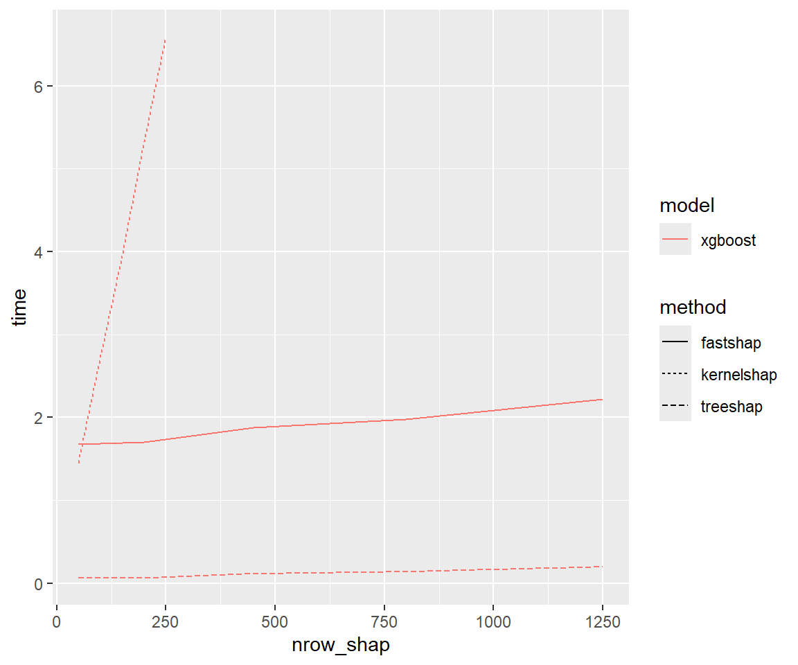
横軸をnrow_shapbg（「入力しない説明変数」のためにランダムで選ぶ元になるサンプル数）とすると次のとおり。 kernelshapではおおむね件数に比例して計算時間が増加しています。 一方fastshapではSHAPを計算するサンプル数ほど計算時間との関係性が明確ではありませんでした。
ggplot(data = results %>% dplyr::filter(nrow_shap == 50, nrow_shapbg >= 50, nsim <= 10),
mapping = aes(x = nrow_shapbg, y = time, color = model, linetype = method)) +
geom_line()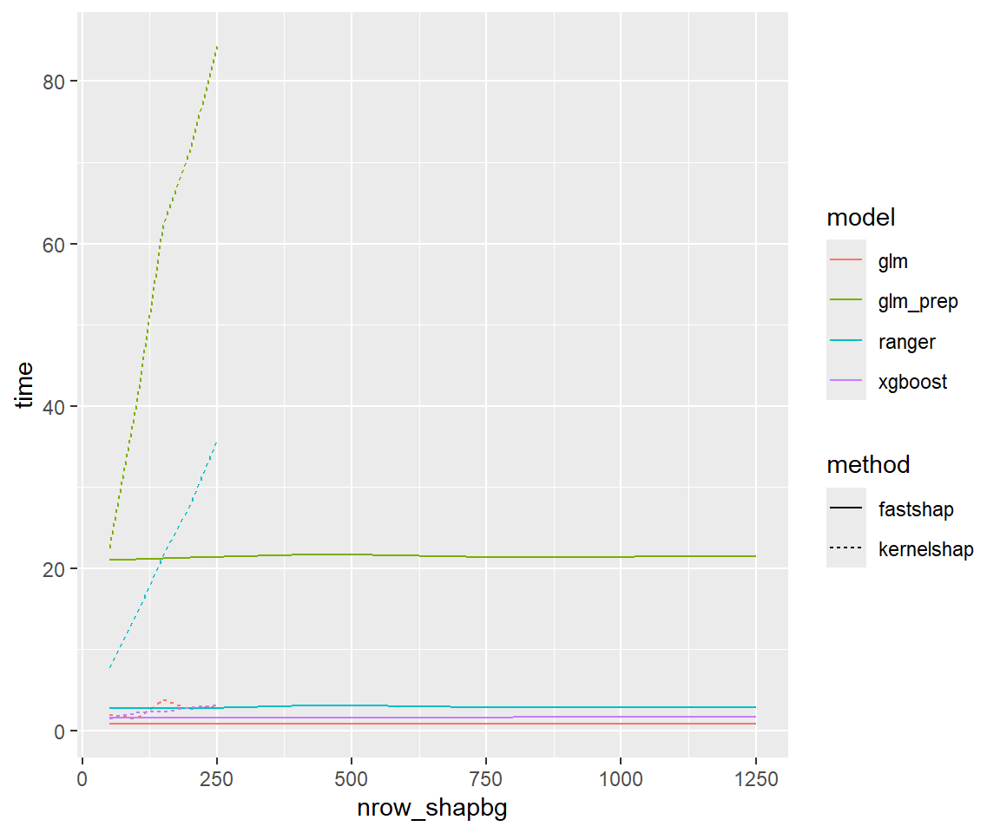
fastshapの試行回数を横軸にとると、計算時間は試行回数と正比例していることがわかります。
ggplot(data = results %>% dplyr::filter(nrow_shap == 50, nrow_shapbg == 50, nsim >= 10),
mapping = aes(x = nsim, y = time, color = model, linetype = method)) +
geom_line()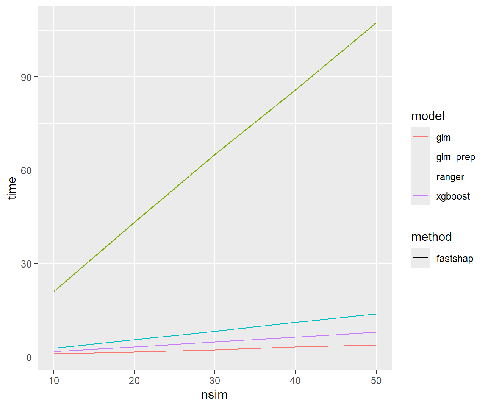
参考までに、上記グラフを作成するためのコードは次のとおりです。
#計算時間比較をしたいモデルの定義
modelsets <- list()
modelsets$glm <- list(object = model_glm, predfun = predfun_glm_logit)
modelsets$glm_prep <- list(object = model_glm_prep, predfun = predfun_glm_prep_logit)
modelsets$xgboost <- list(object = model_xgboost, predfun = predfun_xgboost_logit)
modelsets$ranger <- list(object = model_ranger, predfun = predfun_ranger_logit)#計算パターンの定義
grid <- bind_rows(
tidyr::expand_grid(
model = c("glm", "glm_prep", "xgboost", "ranger"),
bind_rows(
tidyr::expand_grid(
method = "kernelshap",
bind_rows(tidyr::expand_grid(nrow_shap = seq(1,5)*50, nrow_shapbg = 50, nsim = 10),
tidyr::expand_grid(nrow_shap = 50, nrow_shapbg = seq(2,5)*50, nsim = 10))
),
tidyr::expand_grid(
method = "fastshap",
bind_rows(tidyr::expand_grid(nrow_shap = seq(1,5)^2*50, nrow_shapbg = 50, nsim = 10),
tidyr::expand_grid(nrow_shap = 50, nrow_shapbg = seq(2,5)^2*50, nsim = 10),
tidyr::expand_grid(nrow_shap = 50, nrow_shapbg = 50, nsim = seq(2,5)*10))
)
)
),
tidyr::expand_grid(
model = c("xgboost", "ranger"),
tidyr::expand_grid(
tidyr::expand_grid(
method = "treeshap",
bind_rows(tidyr::expand_grid(nrow_shap = seq(1,5)^2*50, nrow_shapbg = 0, nsim = 10))
)
)
)
)#計算パターン1つに対して計算時間を測る関数
calc_shap <- function(object, predfun, method, nrow_shap = 500, nrow_shapbg = 60, nsim = 1){
t1 <- proc.time()
set.seed(2024)
df_shap <- df_train[sample(nrow(df_train), nrow_shap), ]
df_shap_x <- df_shap %>% dplyr::select(-insurance)
set.seed(2024+1)
df_shapbg <- df_train[sample(nrow(df_train), nrow_shapbg), ]
df_shapbg_x <- df_shapbg %>% dplyr::select(-insurance)
nsim_res <- 0
nrow_shapbg_res <- nrow_shapbg
if(method == "fastshap"){
shap_fs <- fastshap::explain(object,
X = df_shapbg_x,
newdata = as.data.frame(df_shap_x),
pred_wrapper = predfun, nsim = nsim)
sv <- shapviz(shap_fs, X = df_shap_x)
nsim_res <- nsim
}else if(method == "treeshap"){
obj_uni <- treeshap::unify(object, df_shap_x)
shap_ts <- treeshap::treeshap(obj_uni, x = df_shap_x)
sv <- shapviz(shap_ts)
nrow_shapbg_res <- 0
}else if(method == "kernelshap"){
shap_ks <- kernelshap(object, X = df_shap_x, bg_X = df_shapbg_x, pred_fun = predfun)
sv <- shapviz(shap_ks)
}
plot <- sv_importance(sv, kind = "beeswarm")
t2 <- proc.time()
t0 <- (t2-t1)[3]
names(t0) <- NULL
return(list(method = method, nrow_shap = nrow_shap, nrow_shapbg = nrow_shapbg_res,
nsim = nsim_res, sv = sv, sv_importance = plot, time = t0))
}#実際に計算時間の計測を行うループ
results <- tibble()
results_plots <- list()
undebug(calc_shap)
for(r in 1:nrow(grid)){
model <- grid$model[[r]]
res <- calc_shap(object = modelsets[[model]]$object,
predfun = modelsets[[model]]$predfun,
method = grid$method[[r]],
nrow_shap = grid$nrow_shap[[r]],
nrow_shapbg = grid$nrow_shapbg[[r]],
nsim = grid$nsim[[r]])
rw <- list()
rw$model <- model
rw$method <- res$method
rw$nrow_shap <- res$nrow_shap
rw$nrow_shapbg <- res$nrow_shapbg
rw$nsim <- res$nsim
rw$time <- res$time
rw$id <- paste(rw$model, rw$method, rw$nrow_shap, rw$nrow_shapbg, rw$nsim, sep = ",")
results <- bind_rows(results, as.tibble(rw))
results_plots[[rw$id]] <- res
print(paste(rw$id, rw$time))
}14.5 参考文献
元の研究は、自営業者の健康保険加入率の低さと健康状態の関係性を調べたものです。この研究で用いられた、1996年の米国医療費パネル調査(MEPS(Agency for Healthcare Research and Quality, n.d.))から抽出されたものがこのデータセットです。↩︎
なお、ここではデータ前処理にrecipesパッケージを使用しています。 また、
%>%はmagrittrパッケージによるパイプ演算子で、右辺の関数の第1引数に左辺を渡すという働きがあります。 たとえばa %>% f %>% g(b)という記述はg(f(a),b)と同等です。↩︎ハイパーパラメータは事前にチューニングしたものを入力しています。 チューニングの過程については本稿の主題を外れるので、割愛します。↩︎
実はXGBoostの場合fastshapパッケージを用いずとも直接shapvizパッケージによる可視化を行うことが出来るので、実用性はあまりありません。↩︎